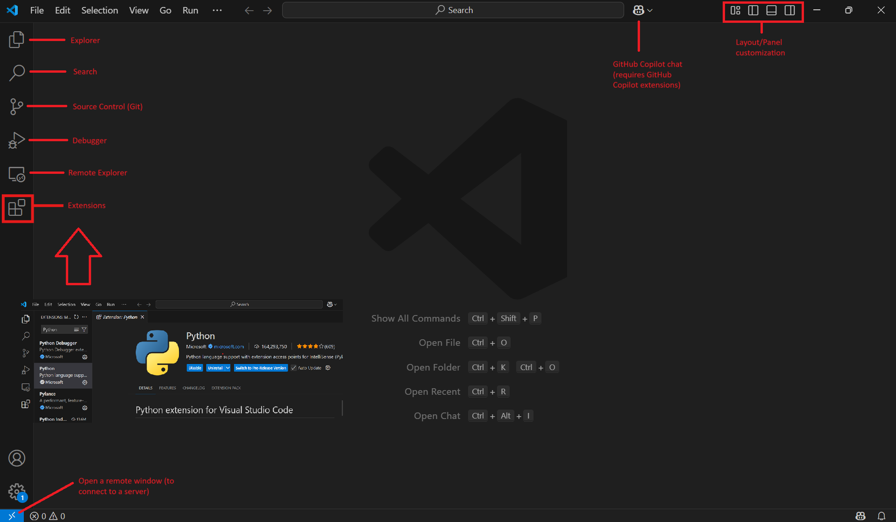
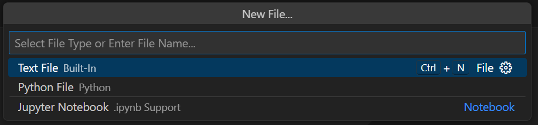

Python in VSCode#
- Set up and customize VS Code.
- Write your first Python code.
Virtual Studio Code (VSCode) is a lightweight, open-source code editor developed by Microsoft for a wide range of programming languages, including Python. It contains a vast library of extensions which allows you to customize your work environment.
As a comprehensive tool, it has support for version control (Git), debugging, and code editing. Moreover, it has a very active community and plenty of tutorials and documentation available online.
VSCode works across all major platforms: Windows, macOS, and Linux.
1. Download VSCode#
Let’s start by downloading the code editor here and installing it.
2. Install Necessary Plugins#
You will need to install the Python extension as well as the Jupyter extension.
3. Create a New File#
Once you have set up VS Code with the necessary extensions, you can create any file by selecting the following: File > New File
{kind=link}
You will be prompted to select a file type, for example a text file, a python file (.py) or a jupyter notebook (.ipynb).
Let’s start with a new jupyter notebook file to start writing your first Python code.
4. Writing your first Python code in a notebook#

As mentioned before, jupyter notebooks allow you to interactively write code (including Python code) and combine it wiht text, images, and graphs.
You can add text and headers to your notebook by selecting Markdown as the programming language for your cell, or selecting “Add Markdown”. You can find more information on basic Markdown syntax here.
To begin writing Python code in your notebook, simply change the cell type to Code, or insert a new code cell with Python as the language.
# My first code
print("Hello, world!")
Hello, world!
The print() function is one of the most basic and useful functions in Python. It outputs whatever is inside the parentheses to the screen — in this case, the message “Hello, world!”. It’s commonly used for displaying messages, debugging, and showing the results of calculations or operations.
In your code cell, adding a dial symbol # before a text turns it into a comment. This is a piece of text within the code that is ignored by the computer when the program runs. Comments are used to provide explanations, clarifications, or descriptions about parts of the code, which helps other programmers (or even your future self) understand what the code does.
Note
You can press Shift + Enter to run your current code cell.
5. Writing your first Python script#
You can write the same code mentioned above in a Python script file and save it as first_script.py.
You can then run this script in a terminal as follows:
python first_script.py
Note
Make sure you’re in the same directory as your script file.
If you’re using Python 3 specifically, replace
pythonwithpython3.
You can also run this script in a Jupyter Notebook via two methods:
Using ! to call a shell command:
!python first_script.py
Using %run magic command:
%run first_script.py
This will run the entire script in the notebook’s environment. Any variables or functions defined in the script will be accessible afterward.